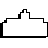

Space Invaders Desktop Icons (classicgaming.cc)

DOWNLOAD
10 .ico (Windows Icon) files zipped (9.67 KB)


 10 .ico (Windows Icon) files zipped (9.67 KB)
10 .ico (Windows Icon) files zipped (9.67 KB)